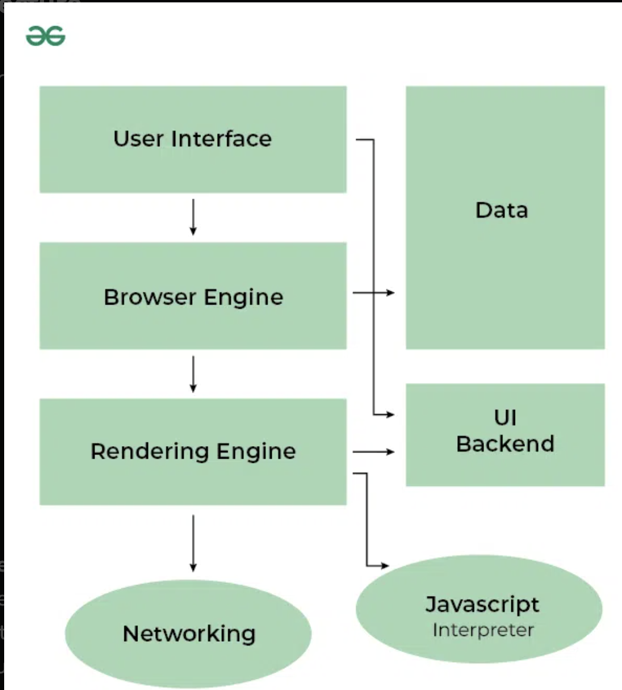

Step 1 : First it will get file from remote server in and load it and get the raw data (binary data)
step2 : convert that into the characters and tokenize the characters
step3 : convert the characters and build the objects for example
{
tagName: "h1",
text:"asirfnioar",
children:
}step4: relationship among the models
step3: convert them as nodes (NodeList) → DOM
same things for css will happen (CSSOM)
How a Web Browser Works: Architecture and Example
A web browser is a software application that allows users to retrieve, view, and interact with content from the web, primarily in the form of web pages. The browser’s architecture consists of several components that work together to fetch web content, render it, and display it to the user.
Let’s break down the architecture of a browser and how it works step-by-step with an example.
Browser Architecture Components
-
User Interface (UI):
- This is what the user interacts with: the address bar, back/forward buttons, bookmarks, etc.
- Example: When you open a browser like Chrome or Firefox, the visible part is the user interface where you can type a URL, navigate pages, or view open tabs.
-
Browser Engine:
- The browser engine manages actions between the UI and the rendering engine. It takes commands from the UI (like navigating to a new page) and forwards them to the rendering engine.
- Example: When you type a URL and hit Enter, the browser engine coordinates the fetching and rendering of that webpage.
-
Rendering Engine:
- This component is responsible for parsing HTML, CSS, and JavaScript, and rendering the content onto the screen.
- Example: Once the page’s HTML and CSS are received, the rendering engine processes this information and displays the styled content on your screen.
Popular rendering engines:
- Blink (used by Chrome, Edge)
- WebKit (used by Safari)
- Gecko (used by Firefox)
-
Networking Layer:
- This layer handles all network calls, like fetching resources (HTML files, images, CSS, etc.) from a web server via HTTP/HTTPS.
- Example: When you enter a URL, this layer sends an HTTP request to the server hosting the website, retrieves the response (HTML, CSS, JavaScript, etc.), and forwards it to the rendering engine.
-
JavaScript Engine:
- Browsers have a JavaScript engine to parse and execute JavaScript code. The engine runs scripts embedded in web pages.
- Example: If a webpage has interactive elements (like forms, buttons, etc.), the JavaScript engine executes the required logic to handle user input or animations.
- JavaScript Engines:
- V8 (used by Chrome, Edge)
- SpiderMonkey (used by Firefox)
- JavaScriptCore (used by Safari)
-
UI Backend:
- This component is used to draw the basic widgets (checkboxes, buttons, etc.) on the web page. It works closely with the rendering engine.
- Example: When a form on a webpage has checkboxes or radio buttons, the UI backend helps render them.
-
Data Storage (Persistence Layer):
- Browsers have local storage mechanisms (like cookies, local storage, indexedDB) to store user data locally on the client side.
- Example: When you log into a website and choose to “stay logged in”, the browser stores some data (like session tokens) in local storage.
-
Networking Layer:
- Manages network calls like DNS lookup, HTTP/HTTPS requests, and so on.
- Example: This layer sends out the request when you visit
example.comand brings back the HTML response from the server.
How a Browser Works: Example Walkthrough
Let’s say you open a web browser (e.g., Google Chrome) and type https://example.com in the address bar and press Enter. Here’s a simplified step-by-step breakdown of what happens:
- Input (User Interface):
- You enter
https://example.comin the address bar and press Enter.
- You enter
- Networking (Browser Engine and Networking Layer):
- The browser checks if
example.comis cached locally. If not, it starts the process of retrieving the page from the server. - The browser sends a DNS request to find the IP address of
example.comand then sends an HTTP request to that server for the page.
- The browser checks if
- Server Response:
- The server responds with an HTML file (and possibly CSS, JavaScript files, etc.) to the browser.
- Rendering Process (Rendering Engine):
- The HTML is parsed into the DOM tree (Document Object Model), which represents the structure of the web page.
- The CSS is parsed into a CSSOM tree (CSS Object Model), defining how elements should be styled (e.g., colors, fonts, layouts).
- The rendering engine combines the DOM tree and CSSOM tree to form the Render Tree, which will be used to display content visually.
- Layout & Painting:
- Layout: The browser calculates the exact position and size of each element on the screen based on the render tree.
- Painting: The visual representation (pixels) is drawn to the screen.
- JavaScript Execution (JavaScript Engine):
- If the HTML contains JavaScript, the JavaScript engine (e.g., V8 for Chrome) parses and executes it. JavaScript can manipulate the DOM and CSSOM trees dynamically (e.g., add new elements, update styles).
- Display (User Interface Backend):
- The fully rendered page is displayed in the browser window.
- Example: You see the content of
example.comnow rendered on your screen.
Example Interaction
If the page has a button (e.g., “Click Me”), and that button has JavaScript associated with it, here’s how the browser will handle it:
- You click the button.
- The JavaScript engine processes the button’s event handler (code that should run when the button is clicked).
- Based on the code, the JavaScript engine might manipulate the DOM (e.g., show a message or change the button color).
- The rendering engine then repaints the part of the screen where the button is to reflect the changes.
Key Performance Aspects
- Rendering Performance: Browsers try to optimize rendering to avoid unnecessary recalculations and repaints (e.g., reflow or layout thrashing).
- JavaScript Optimization: JavaScript engines use Just-In-Time (JIT) compilation to optimize code execution speed.
- Network Optimization: Browsers employ techniques like HTTP caching, DNS prefetching, and resource prioritization to improve page load times.
Conclusion
A web browser is a complex system with many interworking components. From sending network requests to rendering web pages, the architecture is designed to handle a wide range of tasks to provide a seamless browsing experience. By splitting up these components, the browser can efficiently manage everything from HTML parsing to JavaScript execution and CSS styling.